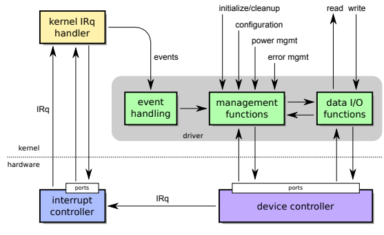

◉ Sistemas de Entrada e Saída
O sistema operacional é responsável por oferecer acesso aos dispositivos de
entrada/saída às aplicações e, em consequência, aos usuários do sistema. Prover acesso
eficiente, rápido e confiável a um conjunto de periféricos com características diversas de
comportamento, velocidade de transferência, volume de dados produzidos/consumidos
e diferentes interfaces de hardware é um enorme desafio. Além disso, como cada
dispositivo define sua própria interface e modo de operação, o núcleo do sistema
operacional deve implementar o código necessário para interagir com milhares de tipos
de dispositivos distintos. Como exemplo, cerca de 60% das 20 milhões de linhas de
código do núcleo Linux na versão 4.3 pertencem a código de drivers de dispositivos de
entrada/saída.
Este capítulo apresenta uma visão geral da organização e do funcionamento dos
componentes do sistema operacional responsáveis por interagir com os dispositivos de
hardware de entrada/saída, e como o acesso a esses dispositivos é provido às aplicações
em modo usuário.
◉ Arquitetura de software de entrada/saída
Para simplificar o uso e a gerência dos dispositivos de entrada/saída, o código
do sistema operacional é estruturado em camadas, que levam da interação direta com o
hardware (como o acesso às portas de entrada/saída, interrupções e operações de DMA)
às interfaces de acesso abstratas e genéricas oferecidas às aplicações, como arquivos e
sockets de rede.
Uma visão conceitual dessa estrutura em camadas pode ser vista na Figura.
Nessa figura, a camada inferior corresponde aos dispositivos físicos propriamente ditos,
como discos rígidos, teclados, etc. A camada logo acima corresponde aos controladores
de dispositivos (discos SATA, USB, etc.) e aos controladores de DMA e de interrupções
implementados no chipset do computador.
A primeira camada de software no núcleo do sistema operacional corresponde
aos drivers de dispositivos, ou simplesmente drivers1
, que são os componentes dede entrada/saída, receber as requisições de interrupção
e fazer o gerenciamento do
dispositivo correspondente. Dentro de um mesmo grupo de dispositivos similares,
como as placas de rede, há centenas de modelos de diferentes fabricantes, com interfaces
distintas. Para cada dispositivo é então necessário construir um driver específico.
Acima dos drivers existe uma camada de código, denominada generic device
interface, cuja finalidade é construir uma visão genérica de dispositivos similares, para
que o restante do sistema operacional não precise ter consciência das peculiaridades
de cada dispositivo, mas possa tratá-los por famílias ou classes, como dispositivos de
armazenamento, interfaces de rede, de vídeo, etc.
Acima da camada de interface genérica de dispositivos, uma ou mais camadas
de código estão presentes, para implementar abstrações mais complexas, como sistemas
de arquivos e protocolos de rede. Finalmente, no topo da arquitetura de software,
são implementadas as chamadas de sistema fornecidas às aplicações para acessar as
abstrações construídas pelas camadas inferiores, como arquivos, diretórios e sockets de
rede, etc.
◉ Classes de dispositivos
Para simplificar a construção de aplicações e das camadas mais elevadas do
próprio sistema operacional, os dispositivos de entrada/saída são geralmente agrupados
em classes ou famílias com características similares, para os quais uma interface genérica
pode ser definida. Por exemplo, discos rígidos SATA, discos SSD e DVD-ROMs têm
características mecânicas e elétricas distintas, mas servem basicamente para o mesmo
propósito: armazenar arquivos. O mesmo pode ser afirmado sobre interfaces de rede
Ethernet e Wifi: embora usem tecnologias distintas, ambas permitem a comunicação
entre computadores.
Nos sistemas de padrão UNIX os dispositivos são geralmente agrupados em
quatro grandes famílias:
• Dispositivos orientados a caracteres: são aqueles cujas transferências de dados são
sempre feitas byte por byte, em sequência. Um dispositivo orientado a caracteres
pode ser visto como um fluxo contínuo de entrada ou de saída de bytes. A
característica sequencial faz com que não seja possível alterar o valor de um
byte que já foi enviado. Dispositivos ligados às interfaces paralelas e seriais do
computador, como mouse e teclado, são os exemplos mais clássicos desta família.
Os terminais de texto e modems de transmissão de dados por linhas seriais
(como as linhas telefônicas) também são considerados dispositivos orientados a
caracteres.
• Dispositivos orientados a blocos: são aqueles dispositivos em que as operações de
entrada ou saída de dados são feitas usando blocos de bytes de tamanho fixo.
Esses blocos são lidos ou escritos em posições específicas do dispositivo, ou
seja, são endereçáveis. Conceitualmente, um dispositivo orientado a blocos
pode ser visto como um vetor de blocos de bytes de mesmo tamanho. Discos
rígidos, CDROMs, fitas magnéticas e outros dispositivos de armazenamento
são exemplos típicos desta família.
• Dispositivos de rede: estes dispositivos permitem enviar e receber mensagens entre
processos e computadores distintos. As mensagens são blocos de dados de
tamanho variável, com envio e recepção feitas de forma sequencial (não é
possível alterar o conteúdo de uma mensagem que já foi enviada). As interfaces
Ethernet, Wifi, Bluetooth e GPRS são bons exemplos desta classe de dispositivos.
• Dispositivos gráficos: permitem a renderização de texto e gráficos em terminais de
vídeo. Devido aos requisitos de desempenho, sobretudo para jogos e filmes,
estes dispositivos exigem um alto desempenho na transferência de dados. Por
isso, sua interface genérica é constituída por funções para consultar e configurar
o dispositivo gráfico e uma área de memória compartilhada entre o processador
e o dispositivo, usualmente denominada frame buffer, que permite acesso direto
à memória de vídeo. Programas ou bibliotecas que interagem diretamente com
o dispositivo gráfico têm acesso a essa área de memória através de bibliotecas
específicas, como DirectX em ambientes Windows ou DRI – Direct Rendering
Engine no Linux.
Vários dispositivos não se enquadram diretamente nas categorias acima, como
receptores de GPS, sensores de temperatura e interfaces de áudio. Nestes casos, alguns
sistemas operacionais optam por criar classes adicionais para esses dispositivos (como
o Windows), enquanto outros buscam enquadrá-los em uma das famílias já existentes
(como os UNIX). No Linux, por exemplo, os dispositivos de áudio são acessados pelasaplicações
como dispositivos orientados a caracteres: uma sequência de bytes enviada ao
dispositivo é tratada como um fluxo de áudio a ser reproduzido, geralmente em formato
PCM. Cabe ao driver do dispositivo e à camada de interface genérica transformar essa
interface orientada a caracteres nas operações de baixo nível necessárias para reproduzir
o fluxo de áudio desejado.
◉ Drivers de dispositivos
Um driver de dispositivo, ou simplesmente driver, é um componente do sistema
operacional responsável por interagir com um controlador de dispositivo. Cada tipo de
dispositivo possui seu próprio driver, muitas vezes fornecido pelo fabricante do mesmo.
Cada driver é geralmente capaz de tratar um único tipo de dispositivo, ou uma família
de dispositivos correlatos do mesmo fabricante. Por exemplo, o driver RTL8110SC(L), da
empresa Realtek Corp., serve somente para as interfaces de rede RTL8110S, RTL8110SB(L),
RTL8169SB(L), RTL8169S(L) e RTL8169 desse fabricante.
Internamente, um driver consiste de um conjunto de funções que são ativadas
pelo núcleo do sistema operacional conforme necessário. Existem basicamente três
grupos de funções implementadas por um driver, ilustradas na Figura:
• Funções de entrada/saída: responsáveis pela transferência de dados entre o dispositivo
e o sistema operacional; essas funções recebem e enviam dados de acordo com a
classe dos dispositivo: caracteres (bytes), blocos de tamanho fixo (discos), blocos
de tamanho variável (pacotes de rede) ou áreas de memória compartilhadas
entre o dispositivo e a CPU (imagens/vídeo e outros).
• Funções de gerência: responsáveis pela gestão do dispositivo e do próprio driver. Além
de funções para coordenar a inicialização e finalização do driver e do dispositivo,
geralmente são fornecidas funções para configurar o dispositivo, para desligar
ou colocar em espera o dispositivo quando este não for usado, e para tratar
erros no dispositivo. Algumas dessas funções podem ser disponibilizadas aos
processos no espaço de usuário, através de chamadas de sistema específicas
como ioctl (UNIX) e DeviceIoControl (Windows).
• Funções de tratamento de eventos: estas funções são ativadas quando uma requisição
de interrupção é gerada pelo dispositivo. Conforme apresentado na Seção
19.6, toda requisição de interrupção gerada pelo dispositivo é encaminhada ao
controlador de interrupções do hardware, que a entrega ao núcleo do sistema
operacional. No núcleo, um tratador de interrupções (IRq handler) reconhece e
identifica a interrupção junto ao controlador e em seguida envia uma notificação
de evento a uma função do driver, para o devido tratamento.
Além das funções acima descritas, um driver mantém estruturas de dados locais,
para armazenar informações sobre o dispositivo e as operações em andamento.
Os drivers normalmente executam dentro do núcleo do sistema operacional,
em modo privilegiado. Por ser código de terceiros executando com acesso total ao
hardware, eles constituem um dos maiores riscos à estabilidade e segurança do sistema
operacional. Drivers mal construídos ou mal configurados são fontes frequentes de
problemas como travamentos ou reinicializações inesperadas.
